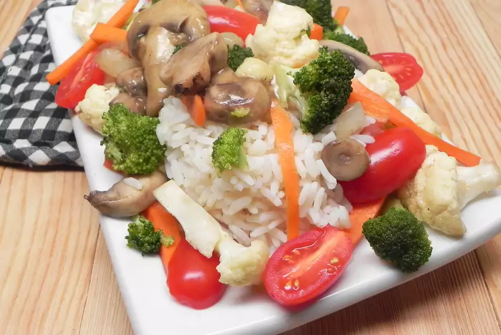

HOME
Stir Fry

Easy Vegan Stir Fry
Delicious, fresh vegan stir-fry that is sure to please and is excellent as an addition to rice.
Ingredients
- 1 small onion, diced
- 2 tablespoons canola oil
- 1 clove garlic, diced
- 1/2 cup diced carrots
- 1/2 cup chopped cauliflower
- 1/2 cup chopped broccoli florets
- 1/2 cup sliced fresh mushrooms
- 1/4 cup soy sauce
- 3/4 cup water
- 1 tomato, diced
- 1 tablespoon chopped fresh basil, or to taste
- salt and ground black pepper to taste
- 1/4 cup unsalted sunflower seeds(optional)
Directions
- Combine onion, canola oil, and garlic in a large skillet. Cook over medium-high heat for 4 minutes. Add carrots, cauliflower, broccoli, and mushrooms one at a time with 2 minutes between each. Pour in soy sauce and stir to coat. Cook for 2 minutes more. Add water, tomato, basil, salt, and pepper. Bring to a boil; reduce heat and simmer until vegetables are fork-tender but not soft, about 5 minutes. Sprinkle with sunflower seeds.
Nutrition Facts
Per Serving: 149 calories; protein 4.3g; carbohydrates 8.5g; fat 11.8g; sodium 963.6mg.